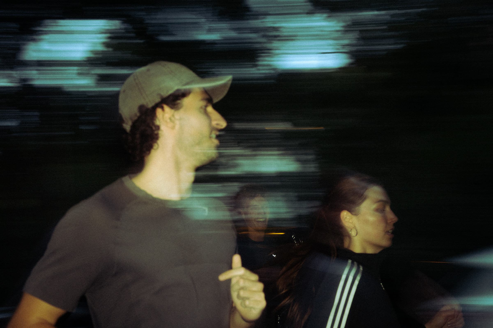
Projekt 01 · Berlin · 2026
Night Run
Ein Lauf durch die Berliner Nacht – mit DJ, Partnern, Verpflegung und Afterparty. Unser erstes eigenes Event und der Start von onside.hq.
- Wann
- 19. September 2026
- Wo
- Berlin
- Strecke
- 8 km · 3 Stopps
- Unsere Rolle
- Konzept, Organisation, Partner, Content
Die Idee
Laufen ist der Anlass.
Das Erlebnis der Grund.
Der Night Run war von Anfang an als Abend gedacht, an den man sich erinnert: die Stadt bei Nacht, ein DJ, gemeinsame Stopps und ein Ziel, an dem der Abend weitergeht. Ein Lauf, bei dem die Zeit auf der Uhr egal ist und das Gefühl danach zählt.
Der Ablauf
Vom Start bis zur Afterparty.
Die Umsetzung
In wenigen Wochen zum Startschuss.
In dieser Zeit ist alles entstanden, was ein Event trägt. Jeder Schritt lag in unserer Hand – genau so wollen wir weiterarbeiten.
- Idee & Konzept
- Route & Ablauf
- Partner & Sponsoren
- Verpflegung
- DJ & Afterparty
- Content vor Ort
Eindrücke
Der Abend in Bildern.
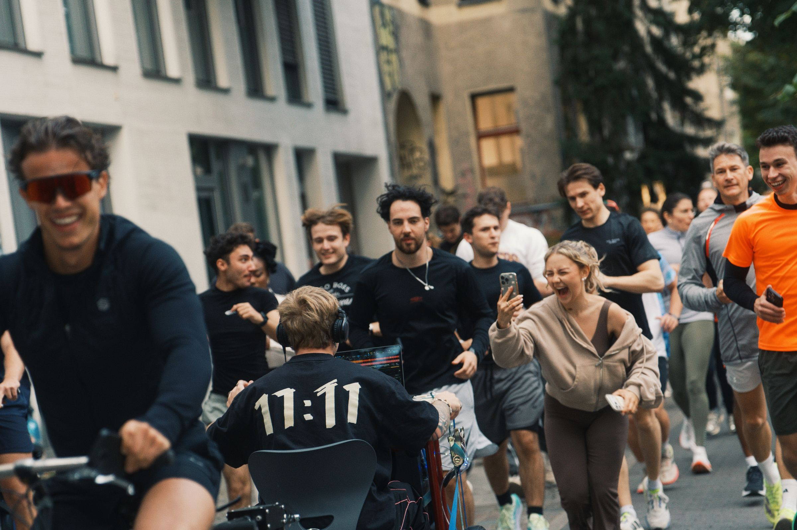
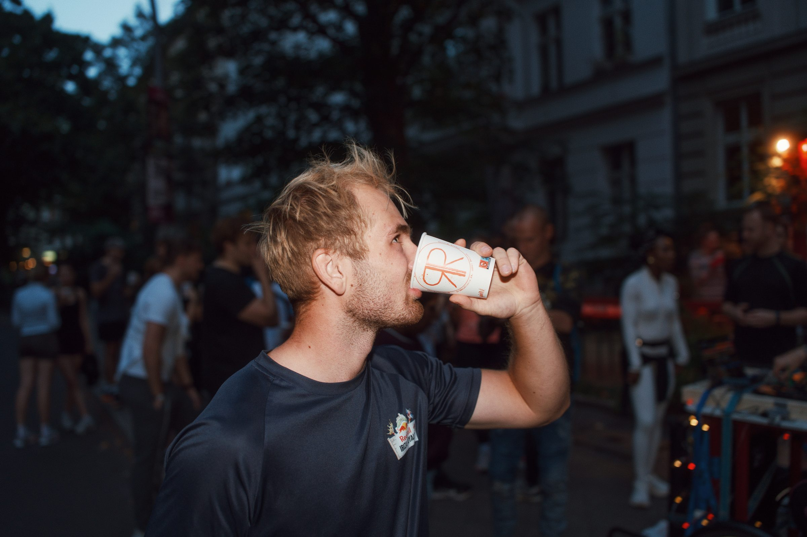
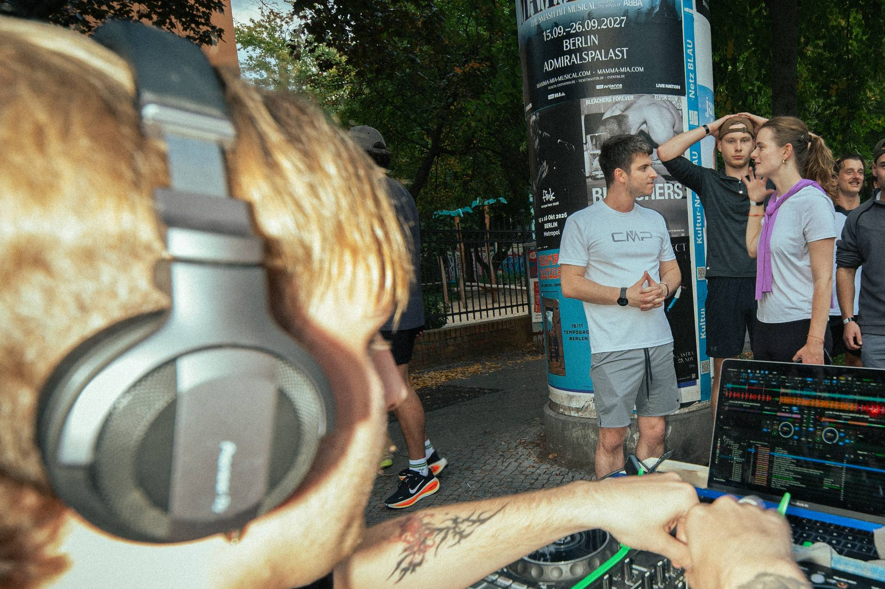
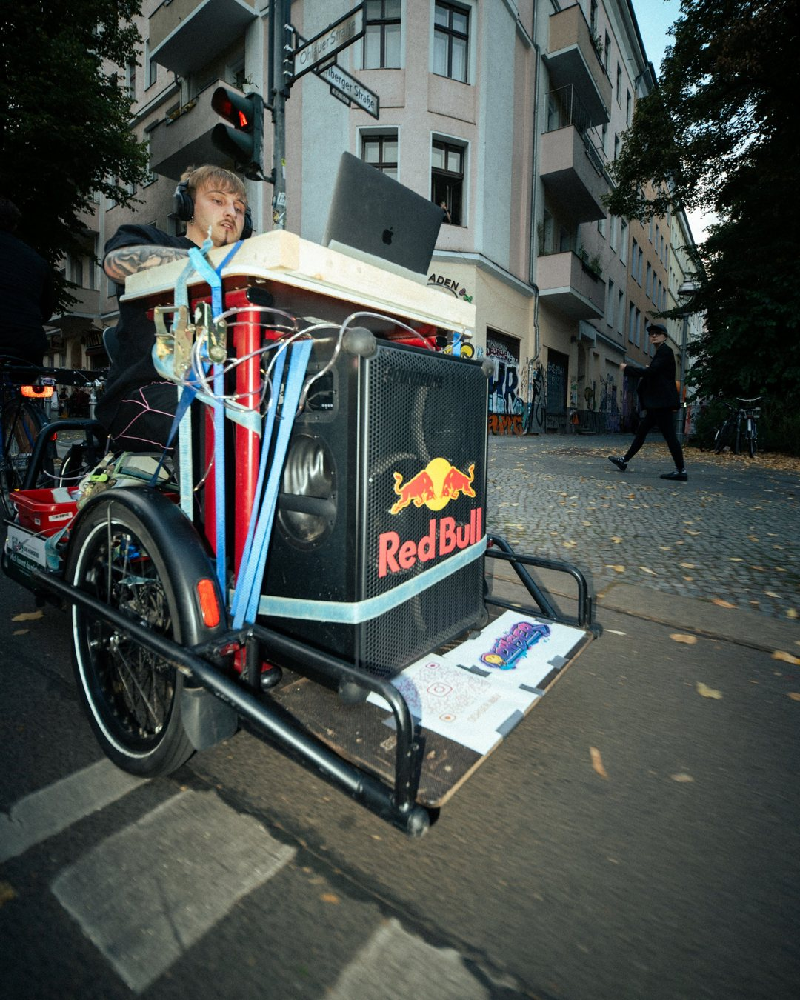
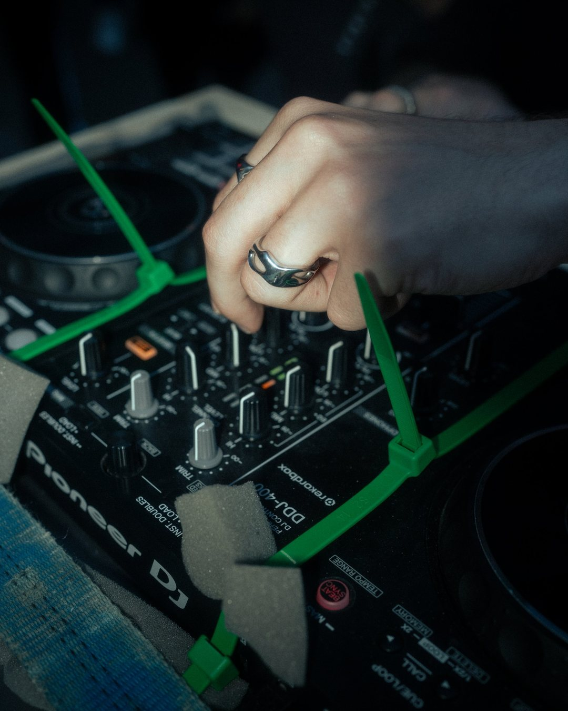
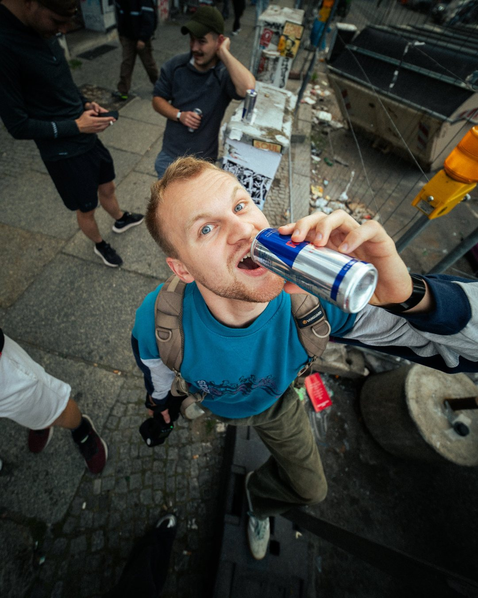
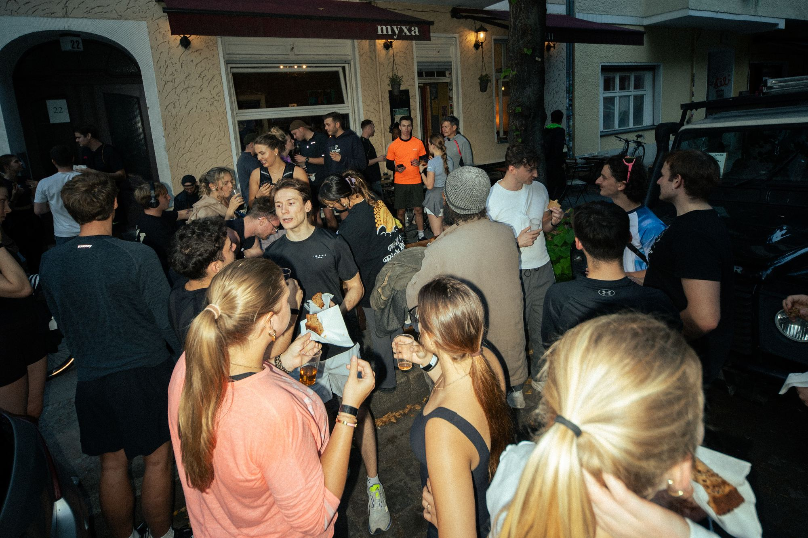
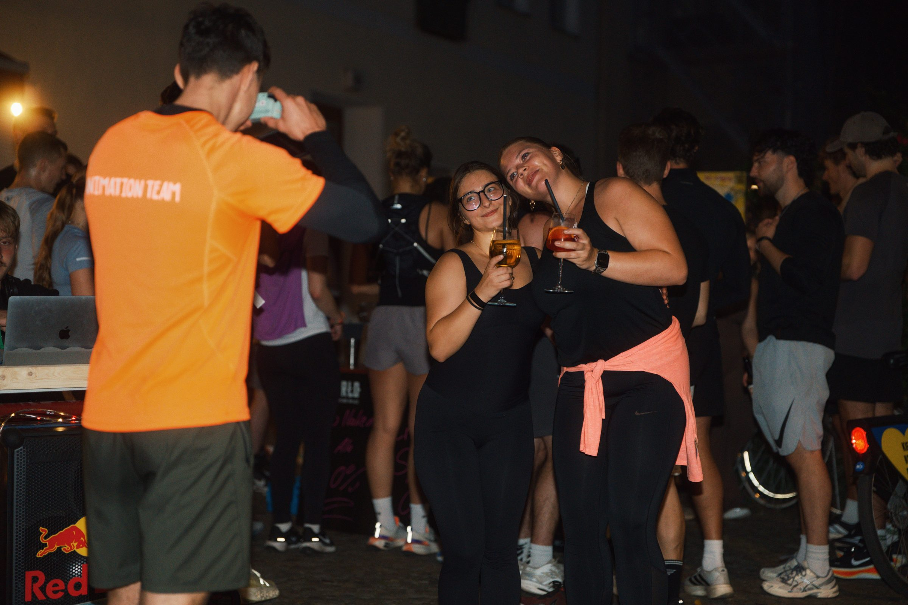
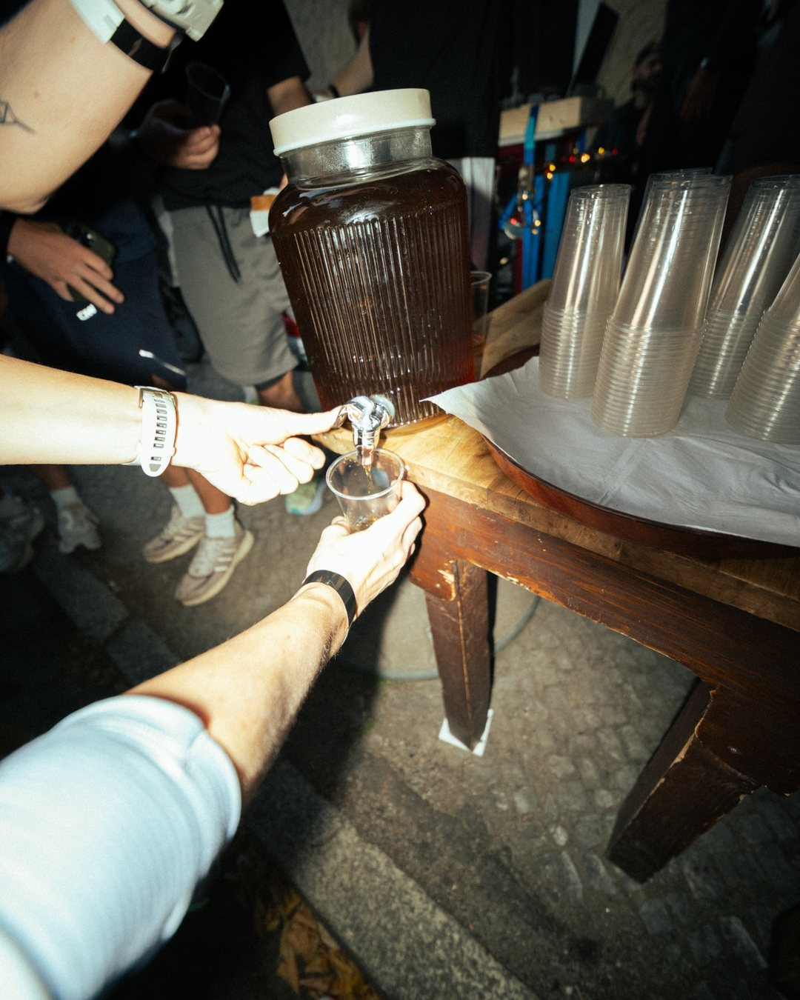
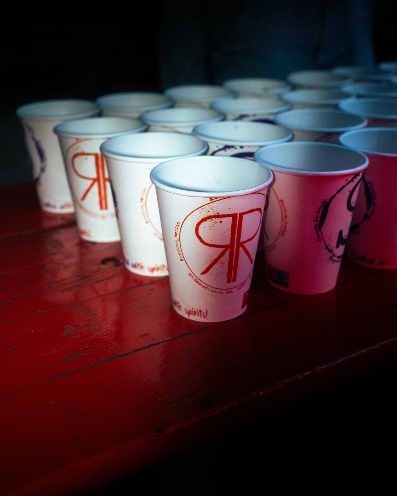
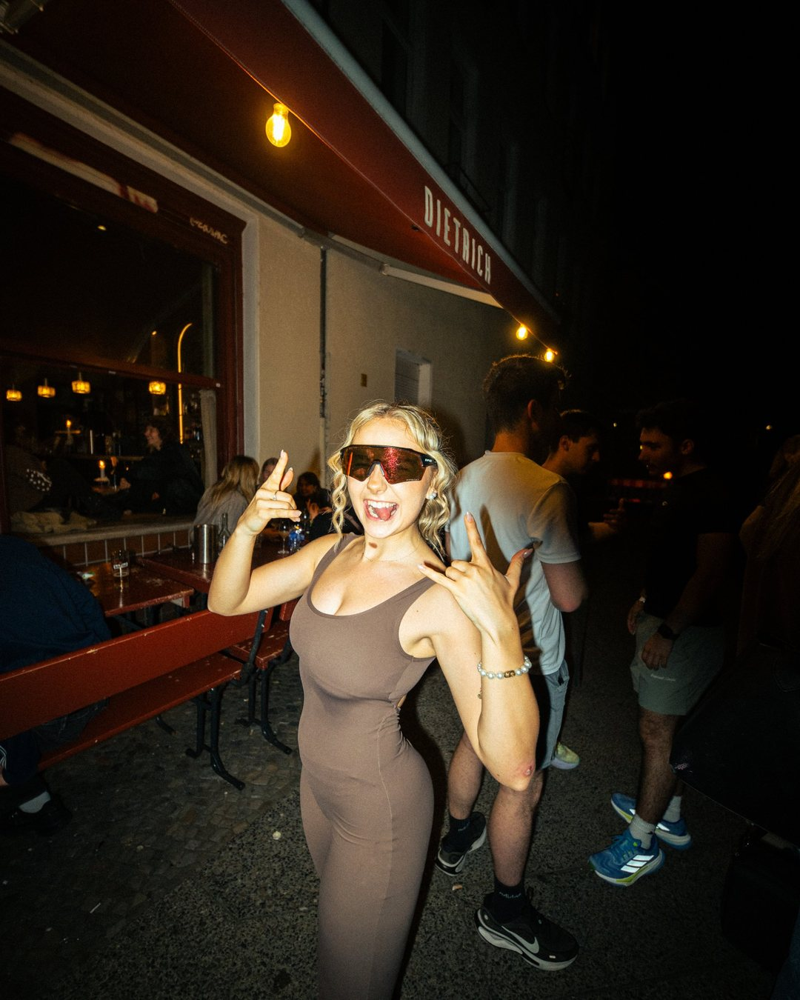
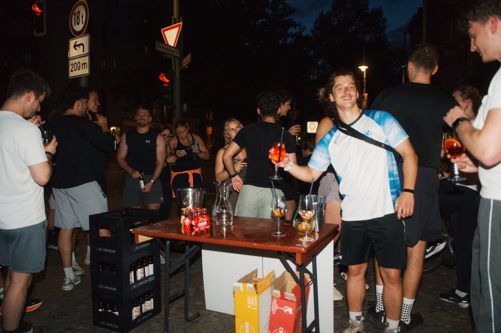
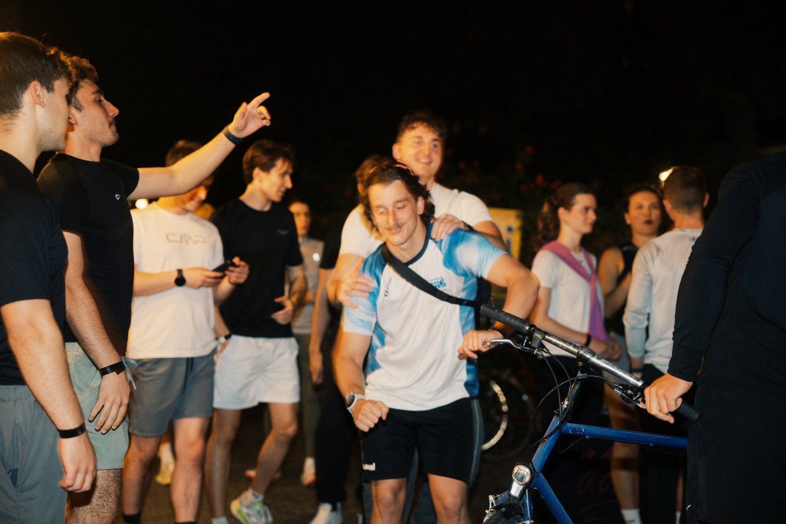
Euer Projekt